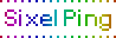

Greetings,
Welcome to SixelPing, the interactive ICMPv6 visualizer.
 - One of the many uses for IPv6
Ping an IPv6 address to change a pixel on the stream. Your pixel will decay over time. There will be no ping response from our end.
X = (0-1919) Y = (0-1079) RR = Red (00-FF) GG = Green (00-FF) BB = Blue (00-FF)
Send Pings to --> 2A06:1E81:F147:X:Y:RR:GG:BB (example: 2A06:1E81:F147:1919:540:FF:FF:FF)
X = (0-1919) Y = (0-1079) RR = Red (00-FF) GG = Green (00-FF) BB = Blue (00-FF)
Send Pings to --> 2A06:1E81:F147:X:Y:RR:GG:BB (example: 2A06:1E81:F147:1919:540:FF:FF:FF)
(click image for full screen)
Supported By:
- Roelf Wichertjes - Software Development
- Nocix - ICMPv6 Collector
- BunnyCDN - Web Hosting CDN